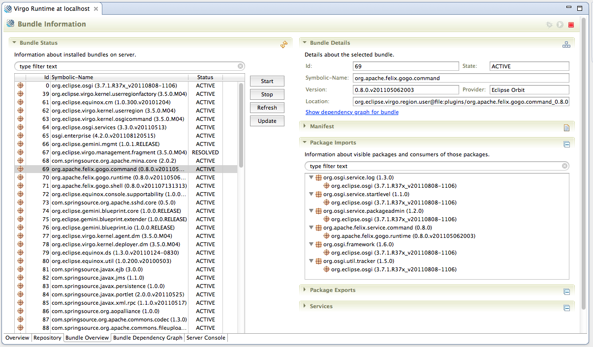

To view and control resources actually installed on the Server select the "Bundle Overview" tab in the server editor.

Here you can start, stop, refresh and update bundles, as well as view detailed information about the bundle. Note that information about running bundles cannot be displayed unless the server is actually running. You can refresh the list of bundles by selecting the refresh button in the upper-right-hand corner of the "Bundle Status" section.
Click the "Show dependency graph for bundle" link to bring up the Bundle Dependency Graph page focused on the selected bundle. See the next section.